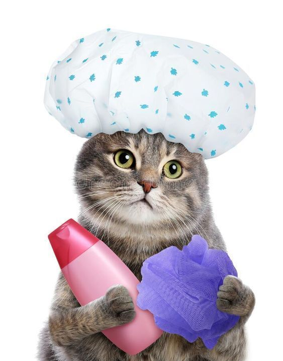

"Spaw" Bath
Our Spaw Bath service includes a luxurious shampoo and conditioning treatment, followed by a gentle blow-dry to leave your pet's fur soft, shiny, and smelling fresh. This service also includes a nail trim and ear cleaning to keep your pet looking and feeling their best.
Teeth and Gum Care
Our Teeth and Gum Care service includes a gentle teeth brushing and gum massage to keep your pet's teeth and gums healthy and strong. This service is especially important for pets with dental issues, as it can help prevent the buildup of tartar and plaque, which can lead to gum disease and tooth loss.We use pet-safe toothpaste and brushes to gently remove plaque and freshen your pet's breath, leaving them with a healthy and sparkling smile. This service can be added on to any of our other grooming services, or booked as a standalone treatment for pets with dental concerns.
Pet Sitting
Our Pet Sitting service is designed to provide your furry friend with companionship and care while you're away. Our experienced pet sitters will visit your home to feed, walk, and play with your pet, ensuring they receive the love and attention they need. We understand that every pet has unique needs and preferences, so we take the time to get to know your pet and their routine, ensuring a seamless and stress-free experience for both you and your pet.
Fur Trim
Our Fur Trim service is perfect for pets with long or thick fur that needs a little extra attention. Our experienced groomers will carefully trim and style your pet's fur to a length that suits their breed and lifestyle, while also promoting a healthy coat.
Discover Our Full Range of Spaw Day Products
At our pet care facility, we offer a comprehensive range of products to meet all your pet's needs.
To learn more about our products: click here